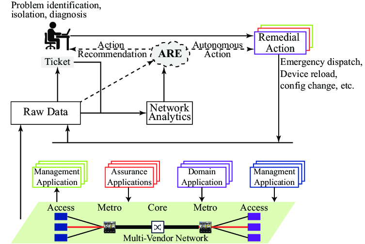

🔐📊 Device Access & Data Collection
This topic explains how IT teams remotely access devices, securely manage networks, and collect data for monitoring and troubleshooting. These are core skills for help desk, NOC, and network engineers, especially in environments built with Cisco Systems.
🖥️ 1️⃣ Remote Device Access Protocols


🔑 A) RDP (Remote Desktop Protocol)
RDP is used to remotely access Windows systems with a full graphical desktop interface.
- Developed by Microsoft
- Full GUI access
- Used for end-user support
Help Desk → RDP → User’s Office PC
- ✔ Fix software issues
- ✔ Install updates
- ✔ Remote user support
- ❌ Not used for routers/switches


🔐 B) SSH (Secure Shell)
SSH provides secure, encrypted command-line access to network devices and servers.
Admin → SSH → Switch / Router CLI
- ✔ Encrypted
- ✔ Industry standard
- ✔ Replaces Telnet


⚠️ C) Telnet (Legacy / Insecure)
Telnet provides remote CLI access but without encryption.
- ❌ Passwords sent in plain text
- ❌ Not safe on modern networks
🌍 2️⃣ VPN (Virtual Private Network)

A VPN creates a secure, encrypted tunnel over the internet.
🧠 Why VPN Is Used
- Secure remote access
- Connect offices securely
- Protect data on public Wi-Fi
Laptop → VPN → Office Network
- ✔ Acts like inside office LAN
- ✔ Internal IPs accessible
🖥️ 3️⃣ Console Access (Out-of-Band)


Console access is a direct physical connection to a network device.
- Used when network is down
- Used for first-time setup
Laptop ─ Console Cable ─ Router
📈 4️⃣ Network Management Systems (NMS)


An NMS is software used to monitor, manage, and collect data from network devices.
🔧 What It Monitors
- Device up/down
- Bandwidth usage
- CPU & memory
- Errors & alerts
NMS → Routers & Switches → Status / Alerts
☁️ 5️⃣ Cloud-Managed Networks (Meraki)


Cloud-managed networking allows devices to be managed via a web dashboard instead of local CLI.
Meraki Device → Internet → Meraki Cloud Dashboard
- ✔ Centralized control
- ✔ Minimal CLI
- ✔ Real-time analytics
🤖 6️⃣ Scripts (Automation & Data Collection)

Scripts are small programs used to automate tasks and collect data.
🧠 Common Uses
- Backup configurations
- Check device status
- Monitor logs
- Restart services
Python Script → SSH → Routers → Collect Configs
- ✔ Saves time
- ✔ Reduces human error
🔄 How Everything Fits Together

| Tool | Purpose |
|---|---|
| RDP | Windows GUI access |
| SSH | Secure CLI |
| Telnet | Legacy CLI |
| VPN | Secure remote network |
| Console | Emergency / local access |
| NMS | Monitoring & alerts |
| Meraki | Cloud management |
| Scripts | Automation |